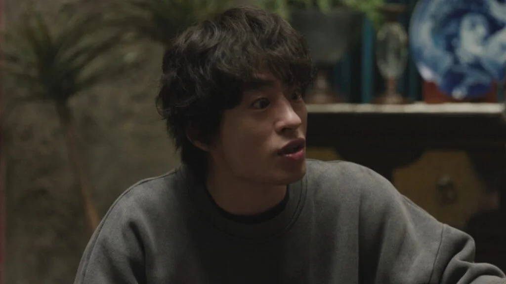
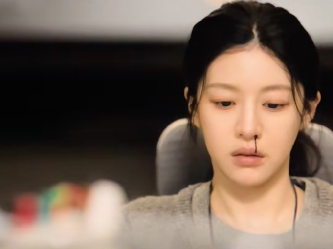
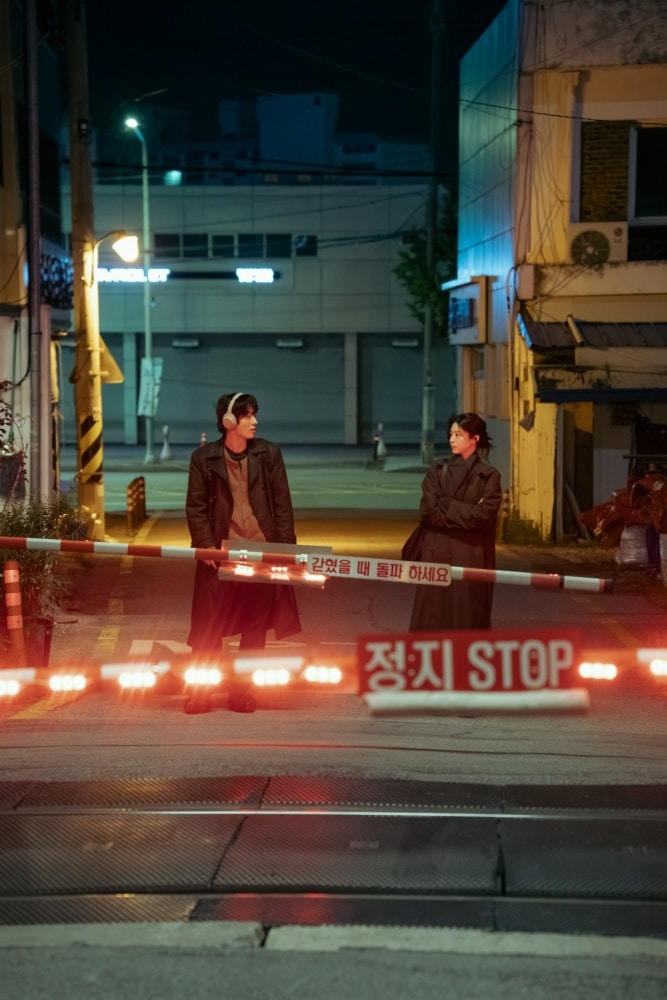

Il nostro meglio · Episodio 1 · JTBC / Netflix 2026
Il peso di vent'anni di attesa
Un drama che inizia con un uomo che urla. Non per rabbia — per esistere.
Sceneggiatura: un uomo impossibile da amare
Scena chiave
La festa di gala
Dong-man esplode davanti a tutti — colleghi, attori, il sistema. Non è una scena di rabbia: è una valvola che cede dopo vent'anni di pressione. La più vera del pilot.
Scena chiave
Eun-a demolisce il copione
Elenca i difetti di Weather Maker con la qualità di chi descrive un problema altrui mentre parla di sé. Dong-man ascolta. È la prima volta che lo fa.
Scena chiave
Il passaggio a livello
La scena che dà la copertina alla serie. Dong-man urla il suo nome sul tetto per sentirsi vivo. Eun-a dice che lo ha sentito. Lui la tocca e dice "mia". Poi si imbarazza. Si ritrae. Ma qualcosa è già cambiato, e tutti e due lo sanno.
Scena chiave
L'autobus di notte
Di ritorno dal gala, Dong-man ciondola la testa a ritmo di musica — poi inizia a battere la fronte contro il vetro. Il sorriso e le testate non si contraddicono. Sono la stessa cosa.
Il primo episodio di We Are All Trying Here si apre nel cuore della notte: un uomo fissa lo schermo vuoto di un laptop senza riuscire a scrivere una sola parola. È Gyeong-se, regista celebrato, ormai al suo quinto film. Tra poche ore l’opera uscirà in sala, ma sul suo volto non c’è traccia di entusiasmo. Più che un uomo alla vigilia di un traguardo, sembra qualcuno rimasto intrappolato dentro un pensiero da cui non riesce a liberarsi.
Quel pensiero ha un nome: Hwang Dong-man. In un bar, Gyeong-se ne parla con un misto di rancore e ossessione, come si parla di una ferita mai davvero rimarginata. Dong-man è il suo tormento, ma anche qualcosa di più ambiguo: una presenza che continua a occupare spazio nella vita degli altri senza nemmeno accorgersene.
È una scelta di scrittura già precisissima: Park Hae-young non ci introduce il protagonista attraverso i suoi occhi, ma attraverso l’effetto che produce sugli altri. Quando Dong-man appare finalmente in scena, sappiamo già che è scomodo, ingombrante, fastidioso, impossibile da ignorare — e che, fino a quel momento, non ha ancora fatto nulla per meritarsi tutto quel peso narrativo.

Hwang Dong-man ha quarant'anni, nessuna regia all'attivo, e appartiene al gruppo degli "Otto" — un'élite della scuola di cinema che ha prodotto registi celebrati. È l'unico che non è diventato niente. Insegna ancora ai giovani studenti che la povertà è un privilegio per chi scrive, e intanto evita il padrone di casa per l'affitto. La sua amarezza non è urlata: è incorporata, è diventata postura, ritmo di camminata, modo di occupare una stanza.
Koo Kyo-hwan fa una cosa straordinaria: Dong-man è un disastro, e lo sappiamo da subito, eppure non riusciamo a distogliere lo sguardo. C'è una scena alla festa di gala per l'uscita del film di Gyeong-se in cui Dong-man comincia a insultare tutti — colleghi, attori, il sistema — con quella progressione di una persona che ha tenuto tutto dentro per troppo tempo e, una volta aperta la valvola, non riesce a chiuderla. È una scena scomoda da guardare. È anche la scena più vera del pilot. Poi esce, corre per strada, cade, urla. Non per rabbia. Per dire al mondo "io sono ancora qua".
"Se non dicesse nulla, si sentirebbe come se non esistesse. Come può non parlare?" — Byeon Eun-a, episodio 1
Eun-a è costruita come il rovescio esatto di Dong-man. Lui esplode verso l'esterno; lei comprime verso l'interno. È conosciuta in azienda come "L'Ascia" per la brutalità delle sue recensioni di sceneggiatura — un'identità che protegge qualcosa di più fragile. Quando il suo capo la convoca per rimproverarle di aver perso il filo critico, la osserviamo assorbire tutto senza rispondere, con quella qualità di chi ha imparato da tempo che esistere senza fare rumore è la strategia più sicura.

Go Youn-jung lavora quasi esclusivamente con il corpo: un'epistassi improvvisa alla scrivania, l'emotiwatch che si illumina di rosso mentre lei è ferma. Il corpo tradisce quello che il personaggio non dice. C’è qualcosa di profondamente coerente nel fatto che Eun-a — il personaggio più controllato, composto e interiorizzato — venga tradita dal proprio corpo. Ogni epistassi arriva come una fuga involontaria di pressione emotiva accumulata. È il dolore che trova un varco fisico. Più cerca di restare immobile emotivamente, più il corpo insiste nel rendere visibile ciò che lei tenta di reprimere.
Ma Park Hae-young costruisce subito una contraddizione. I personaggi che indossano il dispositivo sono proprio quelli meno capaci di comprendere ciò che provano davvero. L’orologio registra l’emozione, ma non può interpretarla; misura il dolore senza riuscire a contenerlo. Così, mentre Dong-man viene umiliato da Choi, il dispositivo conclude con esilarante precisione tecnologica che il problema è: “fame”.
IL PRIMO INCONTRO. LE LORO STRADE SI INCROCIANO Eun-a sta tornando a casa. Dong-man balla vicino a un passaggio a livello con le cuffie addosso. Si ritrovano fermi, fianco a fianco, ad aspettare che le sbarre si alzino. È il tipo di scena che Park Hae-young sa costruire meglio di chiunque altro: due persone che non si cercano, due traiettorie che si intersecano per un momento rubato alla logica del mondo, e in quell'intersezione qualcosa si sposta, impercettibilmente.
Dong-man dice che, quando non ha nessuno con cui parlare, sale sul tetto e urla. Eun-a dice che lo ha sentito. Condividono lo stesso palazzo. Abitano la stessa solitudine da edifici adiacenti senza saperlo — finché lei non glielo dice, con quella voce piatta di chi rivela qualcosa di importante fingendo di non farlo. Dong-man le chiede di leggere la sua sceneggiatura. Lei dice di sì. Non capiamo esattamente perché, e questo è già tutto.
"Una cosa che non possiedi non riesci a crearla." — Byeon Eun-a, episodio 1
Il titolo della sceneggiatura di Dong-man — Weather Maker — è già un manifesto. Qualcuno che produce il tempo che gli altri vivono, senza essere visto. Eun-a la legge di notte e le piace, anche se non avrebbe dovuto — il suo capo gliel'ha consegnata per farla demolire in pubblico davanti all'autore. Lei trova qualcosa nel testo. Qualcosa che la riconosce.
Quando convoca Dong-man all'ufficio e gli elenca i difetti della sceneggiatura — la motivazione dei personaggi troppo labile, la mancanza di forza — lo fa con quella qualità particolare di chi sta descrivendo un problema altrui mentre parla di sé. Dong-man la ascolta. Poi il capo entra e sfascia tutto, venticinque anni di aspettativa sul tavolo come vetri rotti. Il pilot di Park Hae-young stabilisce il tono con chirurgica precisione: questo è un drama sul non-detto. Sul tempo che passa senza che nessuno lo nomini.
Recitazione: sparire dentro il personaggio

- Dong-man è un protagonista scomodo, ma già dolorosamente umano.
- Il contrasto tra Dong-man ed Eun-a dà subito alla serie una tensione emotiva forte.
- L’EmotiWatch è un dettaglio narrativo brillante: ironico, crudele, contemporaneo.
- La scrittura di Park Hae-young riesce ancora a trasformare il disagio quotidiano in materia narrativa.
- Il pilot chiede pazienza: più che raccontare una trama, accumula ferite, silenzi e attriti.
- Alcuni personaggi secondari restano ancora in funzione del protagonista.
- Chi cerca un avvio immediatamente romantico o più dinamico potrebbe trovarlo respingente.
- Il passaggio a livello sfiora il cliché da kdrama, ma tutto sommato funziona.